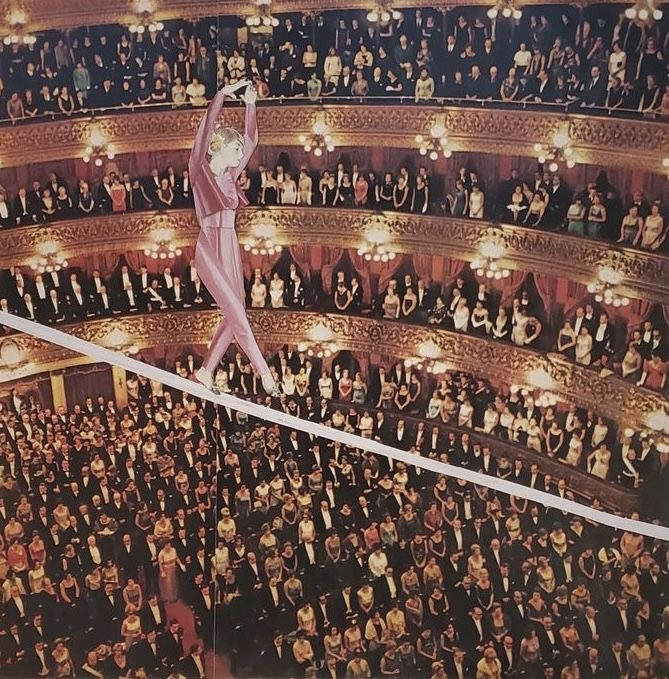
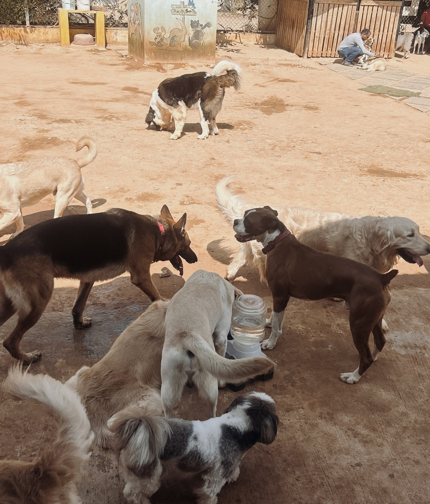
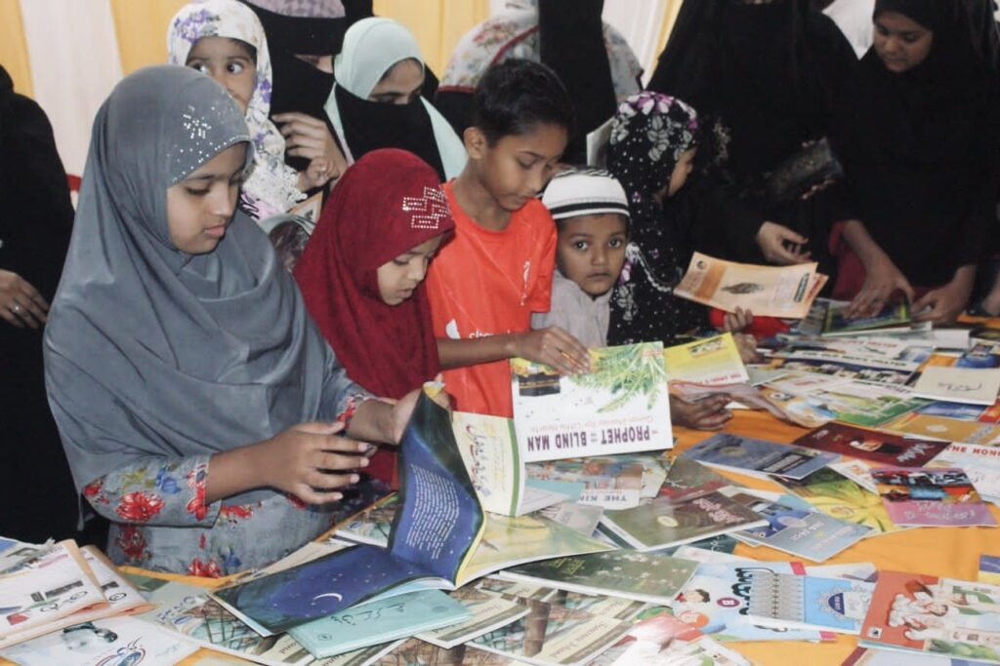

SYNA'S BLOG
HOME
BLOGS
ASSIGNMENTS
BEAT REPORTING
MISCELLANEOUS
ABOUT
ASSIGNMENTS

Journalism Between Activism and Advocacy
READ MORE
Minimising Harm in Journalism
READ MORE

The Hidden Work Behind Bengaluru’s Pet Cafés
READ MORE

The Neighbourhood Library: A Community of Young Readers
READ MORE
Rethinking the Fourth Estate: A Personal Take on India’s Press
READ MORE